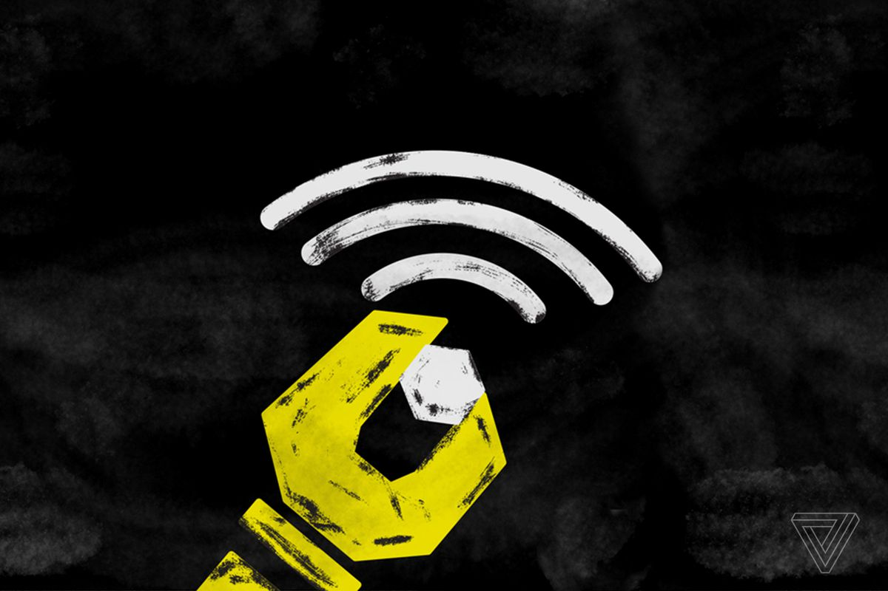

Week 1 Assignment
As We May Think - Vannevar Bush, 1945
Reflection:
In "As We May Think" by Vannevar Bush (1945), Bush begins by discussing the rapid progress of war scientists and urging these scientists to apply their knowledge to further science for the betterment of humanity as a whole. Bush correctly notices how the progress of science has led to a specialization of skills, knowledge and processes which neccessitates two things: the delegation of projects, studies, and things into smaller pieces and a convenient manner in which to store, review, and duplicate these.
Bush, through the rest of the article, proceeds to describe various potential machinery and technolgies based off current trends in the scientific and mechanical fields which match closely to the reality of the present day. The modern day cellphone actually covers almost all of the potential objects Bush described in the article. The modern day cellphone can record voice, video, and photo while also serving to hold notes and documents which can be readily shared with others. In terms of the "memex", which Bush uses to denote a potential machine which could store "books, records, and communications.", it is a direct explanation of how a cellphone can access the internet and more specifically Wikipedia. Just as the "memex", Wikipedia is able to contain a massive amount of knowledge and history with sources and replete with links that "trail" to other revelant and adjacent topics.
Long Live The Web - Tim Berners-Lee, 2010
Reflection:br In "Long Live the Web", Tim Berners Lee discusses the ideologial principles behind the existence of the internet in the public domain and argues for the protection of the internet as an important pillar of modern day democracy. Berners-Lee's holds true today more than back in 2010. Since the publishing of the article, internet, and access to the internet, has become an even stronger double edged sword. In countries with freer internet access, it becomes a powerful tool for the protection of marginalized classes of people as well as a way to organize, show and fight for injustices. However, in countries with restricted or heavily monitored internet and internet access, black holes of internet access have been used to cover up atrocities, incite genocides, and propagate propaganda. And some countries can have a mix of both by giving people the illusion of online privacy yet monitoring their every move. Large steps must be taken to crack down on tech companies' control and increasing monopoly over the Web and all its different uses. In addition, the right to and protection of our online data must be put into law. Companies and the government should not be able to freely harvest our online data to monitor us, create pyschological profiles, or to sell us more products with targeted ads. Furthermore, in the interest of keeping the internet as free as possible, no aspects of the Web or the internet integral to survival in the modern day should be hidden behind paywalls or the forfiture of our personal data.